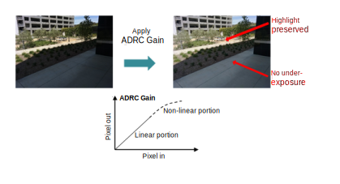
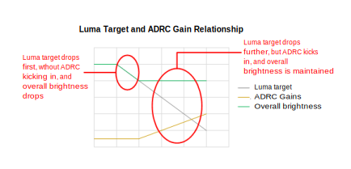

AEC histogram target adjustment can be performed to prevent saturation. Excessive saturation prevention can cause images to look darker.
To avoid this, luma target caps are used to limit the saturation prevention effect.
To increase overall brightness but preserve the highlights (GTM and LTM), apply
a digital gain later in the pipeline. This option allows the histogram AEC to adopt a
lower luma target without causing underexposure.

Tuning concept
AEC uses both the min_target_adjust_ratio (in histogram AEC) and the max_drc_gain parameters to determine the minimum allowed luma target. If saturation is detected, the min_target_adjust_ratio parameter is enabled and ADRC gain is not applied until the luma target reaches the min_target_adjust_ratio parameter value.
For example, if the default target is 50, with the min_target_adjust_ratio value set to 40, then ADRC gain will be 1 when the luma target is between 50 to 40. If saturation still exists after the luma target is set to 40, then the luma target will decrease further with ADRC gain applied, to offset the decreased brightness.

GTM vs. LTM
When LTM is used, contrast can be improved. A dramatic improvement should not be expected, however, and LTM should not be used excessively, as it can cause various artifacts.If the max_drc_gain parameter value is 4, then the minimum luma target will be 40 / 4 = 10.
Boost dark areas
If the max_drc_gain parameter value is 4, then the minimum luma target will be 40 / 4Use other AEC features to bias metering, including bright region discarding and increasing the luma target.
For advanced users, adjust the gain lookup table (LUT). A 64-entry gain LUT is available in the ISP driver. The LUT defines the ADRC gain curve, which is similar to the tone curve. By adjusting the dark end of the curve, dark areas can be boosted.